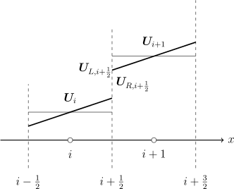

The Monotonic Upwind Scheme for Conservation Laws (MUSCL) is used to reconstruct the values of the face variables from the cell-centered values to extend Roe’s solver to second-order. The MUSCL reconstruction uses a piecewise linear representation of the data seen in Figure 4.1 when \(\phi = 1\) resulting in a second-order scheme for smooth regions [13]. Godunov’s theorem states that ”Linear numerical schemes for solving partial differential equations, having the property of not generating new extrema, can be at most first-order accurate.” [7]. Accordingly, when \(\phi = 0\), a piecewise constant representation is recovered in regions with high gradients resulting in a first-order scheme that keeps the solution total variation diminishing (TVD). A solution is considered TVD when \begin {equation} TV\left (\boldsymbol {U}^{n+1}\right ) \le TV\left (\boldsymbol {U}^n\right ) \end {equation} In smooth regions the MUSCL scheme will retain second-order accuracy.

Following the \(\kappa \)-scheme of van Leer [31], the values of \(\boldsymbol {U}\) used in the variable extrapolation are \begin {equation} \boldsymbol {U}^L_{i+\frac {1}{2}} = \boldsymbol {U}_i + \frac {\phi _i}{4 \Lambda } \left [\left (1-\kappa \right )\Delta \boldsymbol {U}_{i-\frac {1}{2}} + \left (1+\kappa \right )\Delta \boldsymbol {U}_{i+\frac {1}{2}}\right ] \end {equation} \begin {equation} \boldsymbol {U}^R_{i+\frac {1}{2}} = \boldsymbol {U}_{i+1} - \frac {\phi _{i+1}}{4 \Lambda } \left [\left (1+\kappa \right )\Delta \boldsymbol {U}_{i+\frac {3}{2}} + \left (1-\kappa \right )\Delta \boldsymbol {U}_{i+\frac {1}{2}}\right ] \end {equation} \begin {equation} \boldsymbol {U}^L_{i-\frac {1}{2}} = \boldsymbol {U}_{i-1} + \frac {\phi _{i-1}}{4 \Lambda } \left [\left (1-\kappa \right )\Delta \boldsymbol {U}_{i-\frac {3}{2}} + \left (1+\kappa \right )\Delta \boldsymbol {U}_{i-\frac {1}{2}}\right ] \end {equation} \begin {equation} \boldsymbol {U}^R_{i-\frac {1}{2}} = \boldsymbol {U}_i - \frac {\phi _i}{4 \Lambda } \left [\left (1+\kappa \right )\Delta \boldsymbol {U}_{i+\frac {1}{2}} + \left (1-\kappa \right )\Delta \boldsymbol {U}_{i-\frac {1}{2}}\right ] \end {equation} Where the data differences are \begin {equation} \Delta \boldsymbol {U}_{i+\frac {1}{2}} = \boldsymbol {U}_{i+1} - \boldsymbol {U}_{i} \end {equation} \begin {equation} \Delta \boldsymbol {U}_{i-\frac {1}{2}} = \boldsymbol {U}_{i} - \boldsymbol {U}_{i-1} \end {equation} \begin {equation} \Delta \boldsymbol {U}_{i+\frac {3}{2}} = \boldsymbol {U}_{i+2} - \boldsymbol {U}_{i+1} \end {equation} \begin {equation} \Delta \boldsymbol {U}_{i-\frac {3}{2}} = \boldsymbol {U}_{i-1} - \boldsymbol {U}_{i-2} \end {equation}
The choice of \(\kappa \) determines the reconstruction scheme and may take any value between \(-1\) and \(1\). A choice of \(\kappa = 1\) results in a central difference scheme; while a choice of \(\kappa = -1\) will result in an upwind scheme; \(\kappa = 0\) will result in a second-order Fromm scheme [13]. Choices of \(\kappa = \frac {1}{2}\) or \(\kappa = \frac {1}{3}\) will result in third-order reconstruction, however the accuracy of the reconstruction will degrade to second-order [19].
\(\Lambda \) is a scaling factor used to dampen oscillations by increasing the numerical viscosity and may take on a value of \(1\) or \(2\) [1]. A choice of \(\Lambda = 2\) results in a more diffusive solution that avoids spurious oscillations, while \(\Lambda = 1\) will produce the original van Leer [31] \(\kappa \)-scheme.
The flux limiter, \(\phi \), is a function that limits the gradient of \(\boldsymbol {U}\) in the solution. The flux limiter is a function of \(r\), such that \begin {equation} \phi _{i+1} = \phi \left (r_{i+1}\right ) \end {equation} \begin {equation} \phi _{i} = \phi \left (r_{i}\right ) \end {equation} \begin {equation} \phi _{i-1} = \phi \left (r_{i-1}\right ) \end {equation} where \(r\) is a ratio of the forward and backward gradients and is used as a measure of smoothness of the gradient of \(\boldsymbol {U}\) and calculated by the differences in the data. \begin {equation} \label {eqn:rip1} r_{i+1} = \frac {\Delta \boldsymbol {U}_{i+\frac {1}{2}}}{\Delta \boldsymbol {U}_{i+\frac {3}{2}} + \epsilon } \end {equation} \begin {equation} r_{i} = \frac {\Delta \boldsymbol {U}_{i-\frac {1}{2}}}{\Delta \boldsymbol {U}_{i+\frac {1}{2}} + \epsilon } \end {equation} \begin {equation} \label {eqn:rim1} r_{i-1} = \frac {\Delta \boldsymbol {U}_{i-\frac {3}{2}}}{\Delta \boldsymbol {U}_{i-\frac {1}{2}} + \epsilon } \end {equation} \(\epsilon \) is a small factor of \(10^{-6}\) that prevents division by zero. There are many choices for the flux limiter function including van Leer’s [34] or van Albada’s [30]. The most diffusive of the flux limiters is Roe’s [21] Minmod limiter, which is presented as \begin {equation} \phi \left (r\right ) = max\left (0,min\left (1,r\right )\right ) \end {equation} The Minmod limiter is the most dissipative and adds the maximum amount of numerical diffusion while keeping the solution TVD [20].